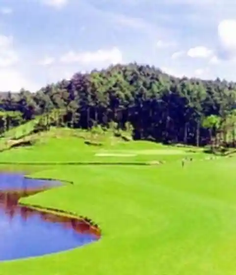
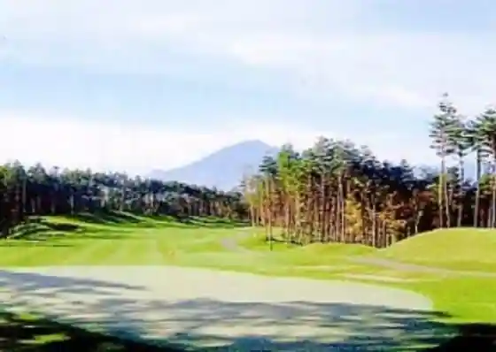
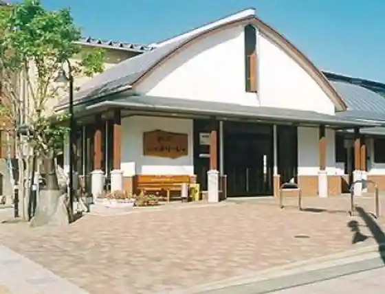

Iwatemachi Numakunai Kantorii Club
Iwatemachi, Iwate · 0195-62-5511 · Official / source link

Rozu Land Kantorii Club
Iwatemachi, Iwate · 0195-62-6111 · Official / source link

Machi no Eki (Yoriiju)
Iwatemachi, Iwate · 0195-62-2111 · Official / source link

Iwatemachi Yaki Udon
Iwatemachi, Iwate · 0195-62-2403 · Official / source link
Iwatemachi Buruberii Tourist Farm
Iwatemachi, Iwate · 0195-62-2111 · Official / source link
Nishida Shokudo
Iwatemachi, Iwate · 0195-62-2615 · Official / source link
Shupuruwain
Iwatemachi, Iwate · 0195-65-2221 · Official / source link
Kakikuke Ko
Iwatemachi, Iwate · 0195-62-5325 · Official / source link
Roadside Station (Ishigami no Oka)
Iwatemachi, Iwate · 0195-61-1600 · Official / source link
Numakunai Koma Odori
Iwatemachi, Iwate · 0195-62-2176 · Official / source link
Kitakami Kawa Seiryu Taiko
Iwatemachi, Iwate · 0195-62-2479 · Official / source link
Tando Kawa Keiryu
Iwatemachi, Iwate · 0195-62-2111 · Official / source link
Oku no Arashiyama
Iwatemachi, Iwate · 0195-62-2111 · Official / source link
Aki Ura Daimyogyoretsu
Iwatemachi, Iwate · 0195-65-2835 · Official / source link
Fu Shima Kofun Gun
Iwatemachi, Iwate · 0195-62-2111 · Official / source link
Kitakami Kawa Gensen Yuhazu no Izumi
Iwatemachi, Iwate · 0195-62-8319 · Official / source link
Kawaguchi Kitsune Odori
Iwatemachi, Iwate · 0195-65-2935 · Official / source link
Sonoi Keiko Zo
Iwatemachi, Iwate · 0195-65-3080 · Official / source link
Tendai Shu Kitakami Yama Shintori Ho Tera Shogaku In (Mido Kannon Do)
Iwatemachi, Iwate · Official / source link
Iwatemachi Chokoku Park
Iwatemachi, Iwate · 0195-62-2111 · Official / source link
Ishigami no Oka Art Museum
Iwatemachi, Iwate · 0195-62-1453 · Official / source link
Itsuka City Shishi Odori
Iwatemachi, Iwate · 0195-62-3866 · Official / source link
Ima Matsu Tateana Jukyoato
Iwatemachi, Iwate · 0195-62-2111 · Official / source link
Numakunai Nanatsu Odori
Iwatemachi, Iwate · 0195-62-3652 · Official / source link
Kitakami Kawa Gensen Iwatemachi Kawa no Eki
Iwatemachi, Iwate · 0195-62-2111 · Official / source link
Iwatemachi Koiki Koryu Center (Plaza Ai)
Iwatemachi, Iwate · 0195-62-2121 · Official / source link